2つの円をつないだロフト面を作る
2つの円をつないだロフト面を作る
使う機能：面を作る
平面、2本を直線でつなぐ、ロフト、境界、四辺、曲線網、オフセットは入力の役割が異なります。方式切替前の不要入力は解除します。
2つの円をつなぐ側面ができる。ソリッドが必要ならロフト立体を使う。
1 準備 — 元の図形から作る
Z=0とZ=10に半径5mmの円を描く。
まだ用意できていなければ、次の手順を先に行ってください。既にモデルがある場合も、例の座標・大きさ・面の向きを自分のモデルへ読み替えます。
- 高さ違いの円2本から円筒状の面を作る — 図形の作成から順に練習できます。
- 線・面・部品を取り違えずに選ぶ — 図形の作成から順に練習できます。
練習前にKCD2を別名保存します。数値の長さはmm、角度は度です。平面内のu/vと世界XYZを区別します。
2 使う道具を開く — 押す場所
- 作図 → 面作成 → ロフト面（右の作り方で他方式へ切替）
別の入口：Ctrl+K → 面を作るを検索 → 候補の用途を確認して開きます。別モードなら「全モードから探す」をオンにします。
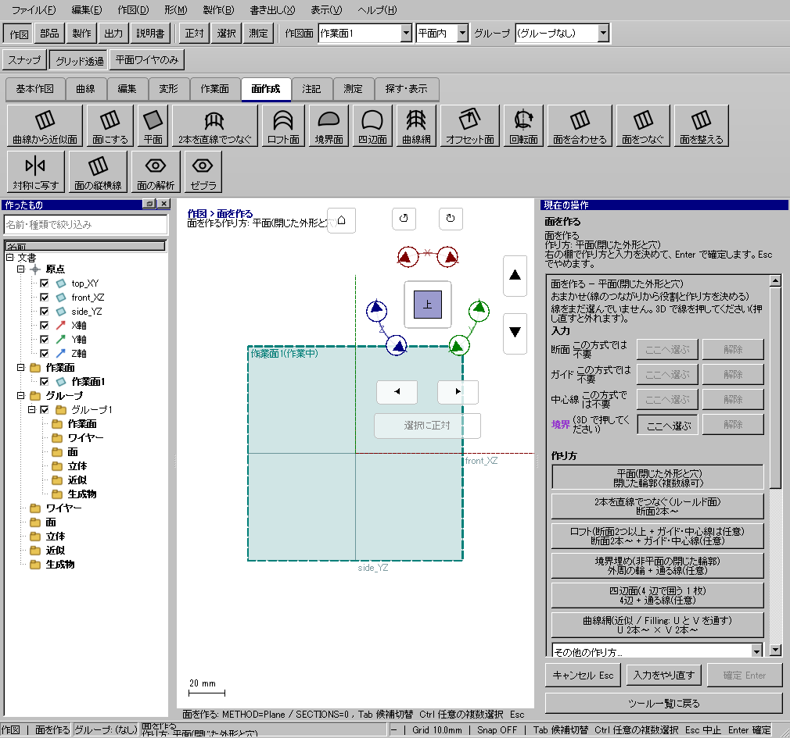
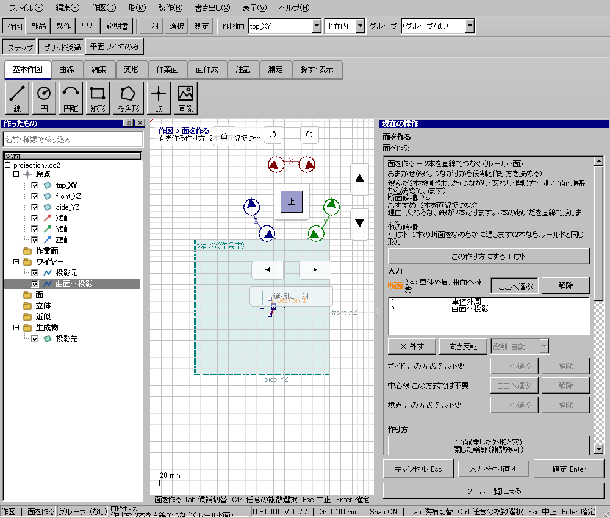
この実画面は既存操作試験の一場面で、下の数値例の完成画像とは限りません。
3 操作手順 — 一つずつ進める
使う方式を選ぶ
「作図 → 面作成」でロフト面などを選びます。この例はZ0とZ10のR5円をつなぎます。
画面で確認：別方式では必要な役割が変わります。下の方式別手順を見ます。
断面の欄を選ぶ
断面欄の「ここへ選ぶ」を押して、下の円、上の円の順に追加します。分割線が1断面なら、先にワイヤー結合してから追加するか、互換の役割表で同じ行へ追加する別手順を使います。
画面で確認：ガイド欄に断面を入れないよう、名前と役割を確認します。
不要な役割を空にする
今回はガイドや中心線を使いません。前の方式から残った入力は、該当欄の解除か行の「×外す」で取り除きます。
画面で確認：方式を替えただけで全入力が自動的に消えるとは限りません。
順序と向きを整える
自動順か手動固定を選び、断面を位置順にします。ねじれがあれば行の向きを反転して比較します。
画面で確認：原曲線は変えず、面生成で使う方向だけを直します。
ガイドを使う場合
ガイド欄へ曲線を入れ、すべての断面と交差するか確認します。見かけだけ接している時は元図の3D位置を直します。
画面で確認：届かないガイドがある場合は診断の番号と該当行を読みます。
境界面・四辺面の接続条件
この段階は境界面・四辺面の場合だけです。ロフト例にはこの欄は出ません。G0は位置、G1は接線、G2は曲率までの条件です。G1/G2は支持面・境界が必要で、線だけの入力から自動で推測しません。
画面で確認：条件を強くするほど入力条件が増えるので、まず位置条件で形を確認します。
下見から確定する
端、断面、ガイドを通る位置とねじれを見ます。状態が有効ならEnterで確定します。
画面で確認：元曲線を保って面が増えます。ロフト立体と違い上下にふたはありません。
4 設定する欄と数値
ボタン名・欄名と、今回使う値を対応させてください。項目が出ていない場合は作り方・モードが合っているか確認し、ペイン内をスクロールします。
| 見る欄・役割 | この例の設定と意味 |
|---|---|
| 断面 | 下から上の順 |
| ガイド | 断面を横切る曲線 |
| 順序 | 自動／手動固定 |
| 接続 | G0／G1／G2 |
選択の確認：役割欄の名前と3Dの強調を照合します。重なって拾いにくい時はTabで候補を替えます。全体を使う例では左一覧の要素名を選び、3Dの1辺選択と区別します。
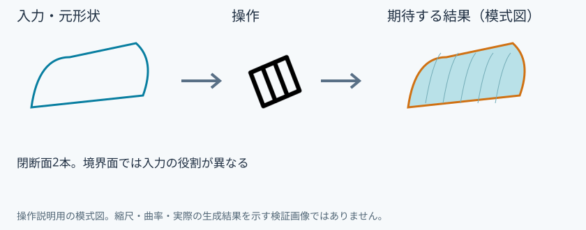
5 確定して結果を確認
必要な入力と数値をそろえ、下見と状態欄を確認して、右ペインの作成・適用・確定ボタンを押します。Enter対応の道具はEnterでも確定できます。
2つの円をつなぐ側面ができる。ソリッドが必要ならロフト立体を使う。
形を作る操作では、元と結果の名前を分けて一覧で確認し、必要に応じて元を一時非表示にします。表示だけの機能では形状や要素数を変えることが目的ではありません。
6 取消・やり直し・保存
Escで未確定の入力を取り消します。道具を終えるには選択（V）か別の道具へ切り替えます。確定済みの図面変更はCtrl+Z、やり直しはCtrl+Yです。
モデルの編集正本はKCD2、説明書の編集正本はKCIです。外部へ出力するだけの機能では、出力ファイルと編集元を両方残してください。
進めない場合 — 症状から戻る場所を探す
| 起きていること | 確認して直す場所 |
|---|---|
| ねじれる | 断面順と向きを比較 |
| ガイドが届かない | 全断面と交差するよう元曲線を直す |
| G1/G2が使えない | 支持面と境界を指定 |
この機能の入力条件：線を1つ以上、または形状ガイドの面を選んでください。
計算中は処理表示を見ます。失敗が出たら、対象・入力条件を変えずに何度も押すのでなく、案内にある対象と条件を確認します。
別の方式・条件で使う
平面
まず主手順で入力の役割を確認し、この例の値と操作へ置き換えます。
この例の準備：同一平面内の閉じた矩形
平面方式の境界へ同一平面の閉輪郭を入れます。見た目で囲まれていても3Dで高さがずれると平面になりません。窓穴を含む外周・内周なら面にするの例も参照します。
- 平面を選ぶ
- 境界を追加
- 下見
- Enter
結果の見分け方：矩形の内部に平面
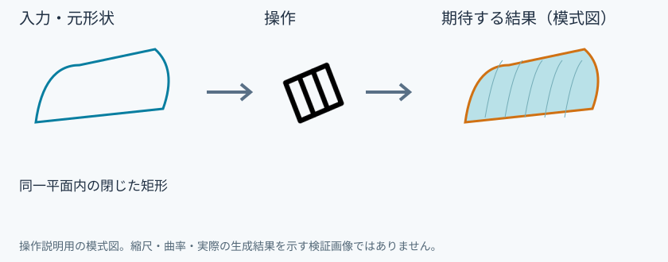
2本を直線でつなぐ
まず主手順で入力の役割を確認し、この例の値と操作へ置き換えます。
この例の準備：離れた2本の曲線
2本をそれぞれ入力して対応する点の向きを確認します。曲線間を結ぶ方向は直線です。全面がドーム状に膨らむ補間を期待する方式ではありません。
- 両曲線を追加
- 向きを確認
- Enter
結果の見分け方：対応点間を直線で結ぶ面
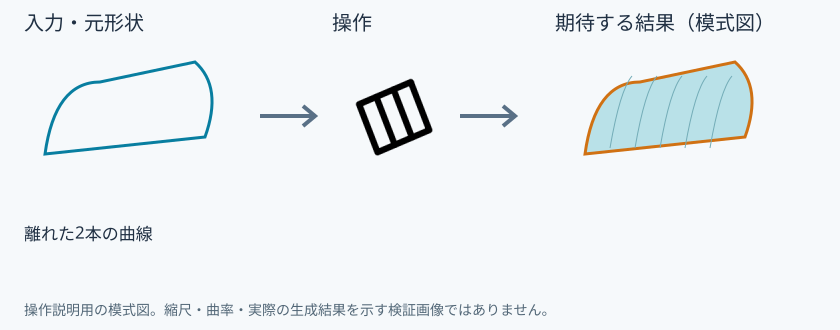
ロフト面
まず主手順で入力の役割を確認し、この例の値と操作へ置き換えます。
この例の準備：高さ0/10mmの2円
2円の作り方は共通準備の面の練習にあります。下→上の順で断面へ追加し、ねじれれば行方向を比較します。ガイドなしの側面を作る例です。
- 断面欄に下・上の順
- 下見
- Enter
結果の見分け方：断面間をつなぐ側面
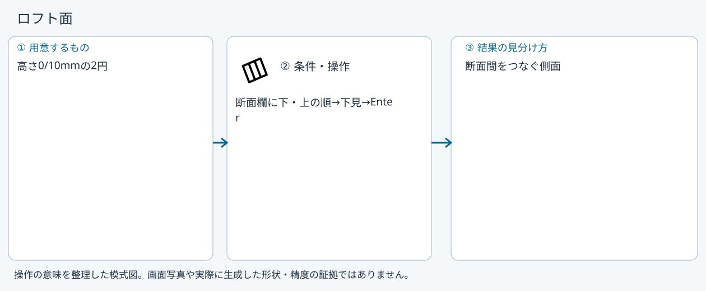
境界面
まず主手順で入力の役割を確認し、この例の値と操作へ置き換えます。
この例の準備：接続した4辺
境界欄へ外周を入れ、内部を通す線は別の役割へ入れます。G1/G2が必要なら支持面と縁も指定します。閉じた外周だけで内部形状が一意とは限りません。
- 境界欄へ追加
- 通る線があれば別欄へ
- 下見
- Enter
結果の見分け方：境界を保持する面
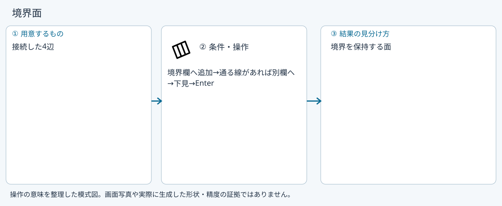
四辺面
まず主手順で入力の役割を確認し、この例の値と操作へ置き換えます。
この例の準備：順につながる4つの辺
順につながる4辺を境界へ指定します。角の接続・辺順・方向を確認します。辺数を合わせるために離れた線を無理に閉じません。
- 境界を周回順に追加
- 下見
- Enter
結果の見分け方：4辺間の面
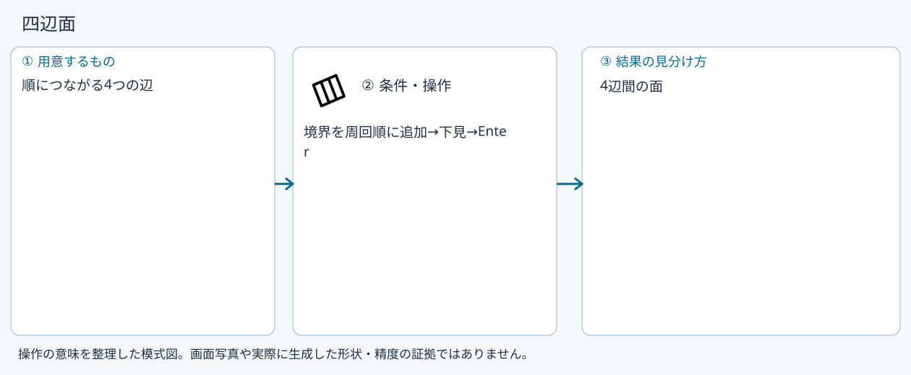
曲線網
まず主手順で入力の役割を確認し、この例の値と操作へ置き換えます。
この例の準備：交差する縦2本・横2本以上
縦方向2本以上と横方向2本以上を別欄へ入れます。全ての縦と横が交差することが条件です。画面上の交差でなく3Dの交差を確認します。
- 縦と横を別欄へ追加
- 全交差確認
- 下見
- Enter
結果の見分け方：曲線網に沿う面
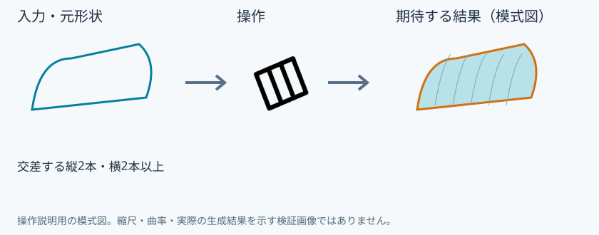
オフセット面
まず主手順で入力の役割を確認し、この例の値と操作へ置き換えます。
この例の準備：作成済みの面
入力は曲線2本でなく元面1枚です。距離1mmを指定し、法線の正負でどちらへ離すかを下見で比べます。体積や側壁を作る厚みとは異なります。
- オフセット面を選ぶ
- 元面
- 距離1mm
- 下見
- Enter
結果の見分け方：元面から離れた面
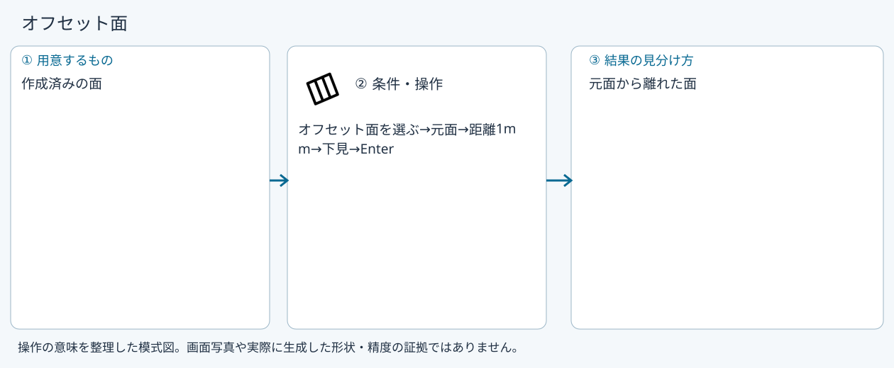
回転面
まず主手順で入力の役割を確認し、この例の値と操作へ置き換えます。
この例の準備：弧と回転軸
この方式は別の回転面ツールです。断面と直線軸、角度180度を指定します。面だけの結果とソリッド回転体を区別します。
- 回転面を選ぶ
- 断面・軸
- 角度180度
- 下見
- Enter
結果の見分け方：軸回りの面
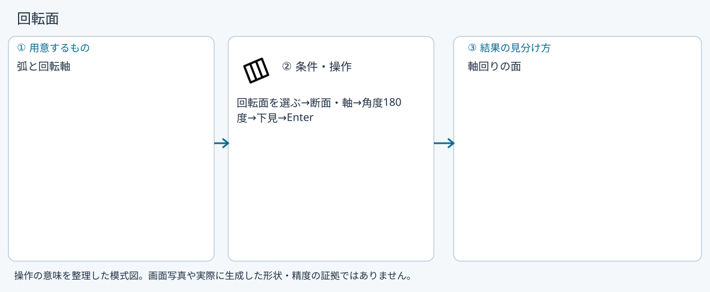
厳密曲線網
まず主手順で入力の役割を確認し、この例の値と操作へ置き換えます。
この例の準備：全て交差する縦横の曲線
縦横が全て交差する厳しい条件を使います。不足やずれがあれば診断を直します。誤差許容を大きくすれば任意の線網で成立する方式ではありません。
- 厳密曲線網
- 縦横を別欄へ
- 検査
- Enter
結果の見分け方：成立条件を満たす曲線網を通る面
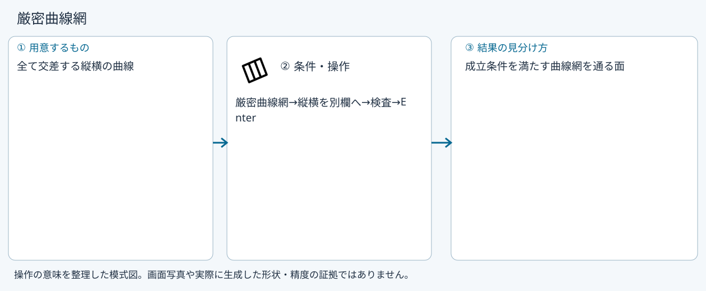
ガイド付きロフト（互換）
まず主手順で入力の役割を確認し、この例の値と操作へ置き換えます。
この例の準備：2断面と両断面に交差するガイド
互換入口でも断面とガイドは別役割です。各ガイドは全断面と交差する必要があります。通常はロフト面へガイドを追加する同じ流れを使います。
- 断面・ガイドを別欄へ
- 検査
- Enter
結果の見分け方：ガイドに沿うロフト面
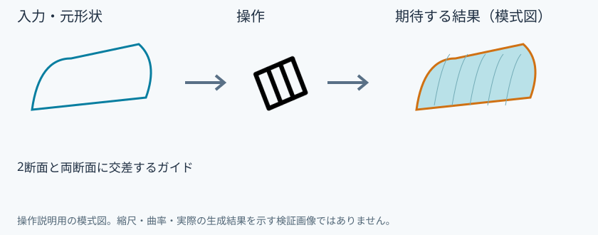
参考画面の出典と確認範囲
試験名：PROJ curved body outer wire with window hole Undo save。試験全体の結果：passed。画像はコマンド呼出し直後で、入力待ち・下見の場合もあります。各段階の完成証拠ではありません。